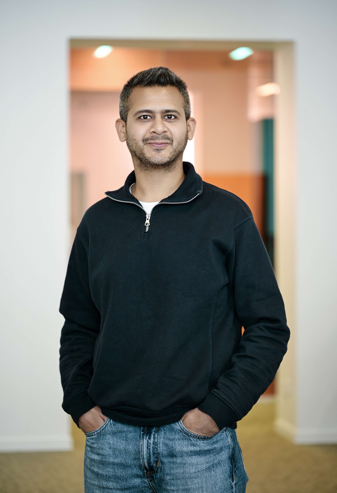

QA Lead | Test Automation | Cypress | CI/CD | Quality Strategy
10+ years experience building automation frameworks and improving release quality across insurance, healthcare and e-commerce platforms.
QA Lead currently working at Qantev in Paris. I focus on building scalable test automation frameworks, integrating quality into CI/CD pipelines, and helping engineering teams adopt shift-left testing practices.
I have worked across insurance, e-commerce, telecom and airline platforms delivering reliable software systems and improving release stability.
Leading QA strategy and automation adoption. Built Cypress automation frameworks for UI and API testing and integrated quality validation into CI/CD pipelines.
Improved platform quality for large scale e-commerce systems through automation frameworks, contract testing (PACT), and CI/CD validation.
Led QA testing activities for telecom platforms and developed Selenium automation frameworks.
Email: nishantsachdeva2406@gmail.com
LinkedIn: linkedin.com/in/nishant-sachdeva